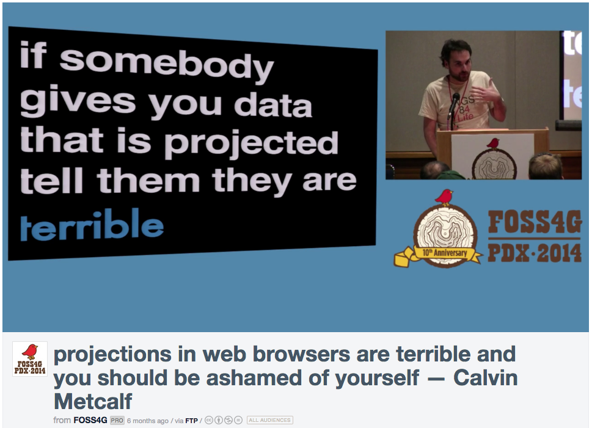

Map Projections: What you need to know!
PLEASE interrupt if you have questions!
I'm gonna have to simplify some things.
This will make real geographers cry.
Projections: what do they do?

Stretch the curved earth (or an
orange) onto a flat plane
Think of it as projecting light through a transparent globe onto a piece of paper
Really it's a mathematical formula that does the same thing...
What can we do with this piece of paper?
Keep it flat, curl it into a tube, twist it into a cone...
These simple concepts have fancy-sounding names
Plane: "Azimuthal"
Tube: "Cylindrical"
Cone: "Conic" (whew, at least that was easy)
If we vary the placement of the light and the paper we get different effects
...we can optimize to prevent certain distortions, but we can't prevent them all!
Let's start with something familiar.

Hi, Mercator!
It became popular because of its strength in nautical navigation.
Every projection has distortion, but Mercator is a particularly acute offender.
Most notably, Mercator distorts relative size of land masses towards the poles.

Stretchy!
So, about those different kinds of distortion...
Conformal preserves angles & (small) shapes
Equivalent is equal area
Equidistant preserves (some) distances
Look at a ton of examples
here

Many weird ones
 UTM
UTM (Universal Transverse Mercator)
Something else you need to know:
your data might be projected already!
But what does that mean?
Projections have units... maybe lat lon, maybe meters, maybe SOMETHING ELSE CRAZY
Let's open up QGIS and look at the units.
Sometimes you'll get a shapefile without its .prj file WHICH IS THE WORST.
If you have GeoJSON and it doesn't have a CRS, it's almost always in WGS84 lat lon.

How do we refer to projections?
SRID (Spatial Reference System Identifier)
Usually these refer to integer EPSG codes
What are some popular ones?
(These are the ones you should get tattooed on the back of your hand)
EPSG: 4326 unprojected lat/lon in
WGS84 ("geographic")
EPSG: 3857 Web Mercator / Pseudo Mercator (formerly
900913)
Some of my personal favorites:
EPSG: 2163 US National Atlas Equal Area / (Lambert Azimuthal)
Does anyone else in the room have a favorite?
So you want to try some projections? Here's how you do it in...
...QGIS
...CartoDB
...TileMill
D3... well... another time.
 Remember datums?
Remember datums?